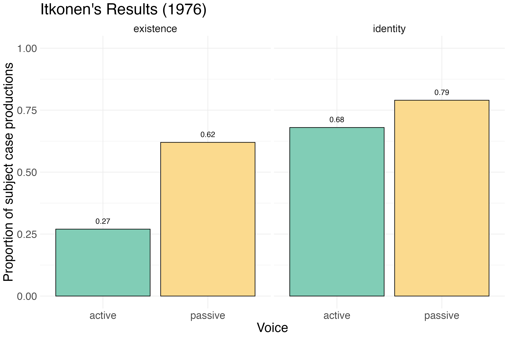
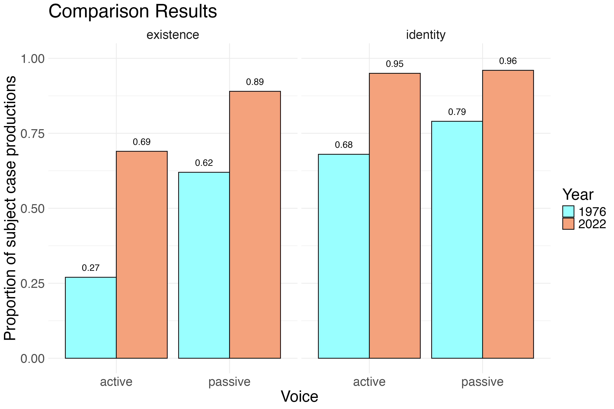
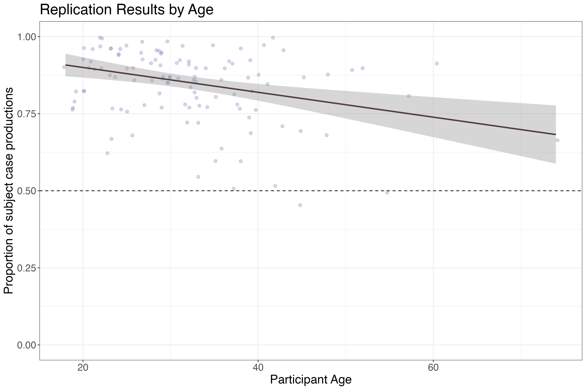

Finnish Grammatical Change in Real-Time
Author's note: This is my public-facing write-up of O'Reilly-Brown, Papineau, and Anttila (in prep). I've written this for my friends and family who are constantly confused about what exactly it means that I 'study language', and for any kindred lovers of language! My goal is to make this research accessible to non-experts, so I have minimized the use of technical jargon where possible, and simplified some data for the sake of accessibility. Where simplifications have been made, I've tried to include more information that you can view by hovering over any coral number.0 Where I make references to specific concepts or words, I've also added external links for the curious. For those interested in even more detailed information, I will be adding a link to our preprint as soon as I can!When it comes to the rules of how the language is structured, which we colloquially call the 'grammar' of the language, it may seem less obvious how things could change.1 After all, we learn the rules of our language as children, and they seem pretty fixed once we reach adulthood. Knowledge of these rules is the reason English users know that (1) is a valid sentence of English, while (2) is not. (Note that in linguistics, we mark ungrammatical sentences with an asterisk at the start — I follow that convention here). The rules of English say that only either the word "the" or the word "my" can appear linearly before the same noun (in this case, "song").
(1) My favorite song is by Lady Gaga.
(2) *The favorite my song is by Lady Gaga.
However, the study of languages over time, called historical linguistics, has shown us that grammar does change. Indeed, in older varieties of English, (2) would have been perfectly grammatical (if perhaps a bit anachronistic in its content). In fact, the rules of English grammar have changed so much over the centuries that Old English, spoken between roughly the 5th and 12th centuries, is mostly unrecognizable to today's English speakers.
We know much of the rules of Old English grammar because of the many texts that have survived from that time period, such as Beowulf. While the study of historical texts provides valuable insights into how languages change, it comes with the drawbacks of being unable to observe the change as it happens, and being limited to only that text which has survived to the present day. These texts are also often of a particular variety (educated, formal) in comparison to language as used by people in everyday life. They also don't let us probe the ways in which parts of the grammar might be related to one another, because we are only working with observational data.
In this project, we carried out a replication of a study first conducted in 1976 by Terho Itkonen, which observed variation in the use of certain grammatical forms in Finnish and suggested that the language was undergoing change. By replicating Itkonen's study nearly 50 years later, we were able to observe real-time change in Finnish grammar. Our findings not only confirmed Itkonen's original observations but also provided new insights into the ongoing evolution of Finnish grammar, demonstrating that languages are indeed dynamic systems that continue to change and adapt over time. In this writeup, I present the basic premise of the study, our methodology, and our key findings.
The Finnish Language
Finnish is a member of the Uralic language family, spoken by some 5 million people, primarily in Finland, but with sizable Finnish-speaking communities in Sweden, Russia, the United States, and other countries. It is closely related to the Estonian language, and more distantly related to Hungarian and several minority languages spoken in Finland, collectively known as the Sámi languages.Finnish Grammar
In English sentences, we distinguish between who is doing the action (the subject of a sentence) and who is receiving the action or being affected by it (the object of a sentence) primarily by using word order. For example, in the sentence:(3) Matti shot the bear.
The subject "Matti" comes before the verb "shot", and the object "the bear" comes after it. If we were to switch the order of the subject and object, we would change the meaning of the sentence:
(4) The bear shot Matti.
In many other languages, including Finnish, the 'roles' (e.g., subject, object) that the different nouns play in the sentence are distinguished not only by word order, but also by changing their forms depending on what role they are playing in the sentence.2 Take the equivalent Finnish sentences to (3) and (4) below (note that "-" is a linguistic convention used to indicate subparts of a word, and does not appear in actual Finnish writing):
(5) Matti ampui karhu-n.
Literally: "Matti shot bear-object"
'Matti shot the bear.'
(6) Karhu ampui Mati-n.
Literally: "bear shot Matti-object"
'The bear shot Matti.'
Notice how the words "Matti" and "karhu" (bear) change their form depending on where they appear in the sentence? When either "karhu" or "Matti" is the object of the sentence, it gets the additional ending "-n".7 ADD TOOLTIP ABOUT MATI-N The consequence of indicating these kinds of relations on the nouns instead of relying solely on word order is that you can also move the order of the words around without changing the meaning of the sentence, because the endings tell you who is doing what to whom:
(7) Karhu-n ampui Matti.
Literally: "bear-object shot Matti"
'Matti shot the bear.'
Sentences like (7) are perfectly grammatical in Finnish, though they often sound a bit more formal or poetic than the more common word order seen in (5) and (6). That being said, the important thing is that Finnish speakers can use word order and these special endings somewhat flexibly to convey the same meaning. In linguistics we call these special endings "case markers", as they 'mark' the grammatical 'case' (or role) of the noun they are attached to (in this case (ha!), the object case).
Finnish is known to have 15 different cases that mark different grammatical roles and meanings by changing the form of the word. I've provided one example above (the object case), but Finnish can mark everything from possession to location using these word forms. For example, the English phrase "in the forest" would be expressed in Finnish with a single word "metsässä", formed from the word "metsä" (forest) where the ending "-ssä" marks the "in" location case, as in:
(8) Karhu on metsä-ssä.
Literally: "bear is forest-in"
'The bear is in the forest.'
While Finnish makes use of many different cases, we will focus on only two in this post: the object case, as you have already seen, which is indicated by adding -n or -t to the end of the word, and the subject case.3 The subject case, as you have already seen, is unmarked in Finnish, meaning that words appear in their 'default' forms in the subject case- the same form you might use to look these words up in a Finnish-English dictionary!
Itkonen's 1976 Study
In 1976, Finnish linguist Terho Itkonen recognized that in some grammatical structures, such as the one provided in (9), the word that occurs as the object of the verb can be either object case-marked (e.g. "karhu-n") or unmarked, instead appearing in the subject case ("karhu"). In this and future examples, I mark variation between possible forms with "~".(9) Matti luuli metsä-ssä olevan {karhu ~ karhu-n}
Literally: "Matti thought forest-in is {bear (subject) ~ bear-object}"
'Matti thought there to be a bear in the forest'
In (9), the object of the verb "luuli" (thought) can appear either in the marked object case ("karhu-n") or in the unmarked subject case ("karhu"). Historically, these structures only permitted the use of the marked object case, as documented in several grammars dating from the late 19th century and early 20th century. However, Itkonen noted that, at least in 1976, there was considerable use of the subject case in these same positions, indicating a possible ongoing change in the grammar of Finnish, a fact he examined by asking 126 university students in Finland to indicate which form they preferred (subject or object) in a variety of sentences. While this is in and of itself an interesting finding (because it can be hard to capture language change like this in real time!), what is even more interesting is the fact that Itkonen found that the rate at which his Finnish speakers preferred the subject case over the object case varied depending on what kind of construction was under investigation.
For example, just as in English, Finnish makes a distinction between the active and passive voices. In active voice sentences, the subject of the sentence is the one performing the action of the verb, as in (9) above. In passive voice sentences, the subject of the sentence is the one receiving the action of the verb, as in (10) below:
(10) Metsässä luultiin olevan {karhu ~ karhu-n}
Literally: "forest-in was-thought is {bear (subject) ~ bear-object}"
'There was thought to be a bear in the forest'
What Itkonen observed in his original study was that Finnish speakers were more likely to use the subject case in passive constructions such as (10) than in active constructions such as (9). But that's not all! He also found that speakers were more likely to use the subject case in sentences which asserted the existence of the object, such as (10) above than in sentences which assert that the object has a particular identity or property, as in (11) below:
(11) Pekka luuli Matin olevan {sotilas ~ sotilaa-n}.
Literally: "Pekka thought Matti is {soldier (subject) ~ soldier-object}"
'Pekka thought Matti to be a soldier'
I will refer to the sentence type in (10) as an "existence construction", and the sentence type in (11) as an "identity construction".4 Of course, with two different variables (voice and construction type), there are four possible combinations of these factors, as summarized in the following examples, some of which are reproduced from above:
(12) Active Voice + Existence Construction:
Matti luuli metsä-ssä olevan {karhu ~ karhu-n}
Literally: "Matti thought forest-in is {bear (subject) ~ bear-object}"
'Matti thought there to be a bear in the forest'
(13) Passive Voice + Existence Construction:
Metsässä luultiin olevan {karhu ~ karhu-n}
Literally: "forest-in was-thought is {bear (subject) ~ bear-object}"
'There was thought to be a bear in the forest'
(14) Active Voice + Identity Construction:
Pekka luuli Matin olevan {sotilas ~ sotilaa-n}.
Literally: "Pekka thought Matti is {soldier (subject) ~ soldier-object}"
'Pekka thought Matti to be a soldier'
(15) Passive Voice + Identity Construction:
Luultiin Matin olevan {sotilas ~ sotilaa-n}.
Literally: "thought Matti is {soldier (subject) ~ soldier-object}"
'Matti was thought to be a soldier'
Itkonen found that, of these four constructions, Finnish speakers in 1976 were most likely to produce the subject case in (15) Passive Voice + Identity structures, followed by (14) Active Voice + Identity, then (13) Passive Voice + Existence, and finally (12) Active Voice + Existence structures, which showed the least use of the subject case. This pattern of results is presented visually in Figure 1, and Figure 2 presents the proportion of subject-case responses by voice and structure type in Itkonen's original study.
Figure 1. Relative ordering of subject-case productions in Itkonen's 1976 study.

Figure 2. Proportion of subject case use in Itkonen's (1976) original study, broken down by voice (green = active; yellow = passive) and structure type.
This pattern suggested to Itkonen that the ongoing change in Finnish grammar was not happening uniformly across all constructions, but rather was influenced by the specific grammatical context in which the variation occurred. In the intervening decades, various linguists have attempted to formalize this variation in line with current theoretical views on grammar. What remained to be done, however, was confirming that what Itkonen observed was actually an ongoing change in progress, and not just a blip of variation. Enter our project.
Our 2022 Replication Study
In 2022, my friend and colleague Madelaine O'Reilly-Brown and I were lucky enough to take the course Structure of Finnish with Professors Arto Anttila and Paul Kiparsky at Stanford University as part of our doctoral training. For our final project, we decided to replicate Itkonen's 1976 study to see if subject case marking in these same constructions had continued to change in the intervening decades. We were particularly interested in seeing if the same hierarchy of subject case use that Itkonen observed still held, or if the patterns of variation had shifted in any way. If it has remained the same, this would provide support for the idea that the language change does not happen randomly throughout the linguistic system but rather follows predictable patterns dictated by the underlying structure of the grammar.Methodology
In order to do this, we carried out a faithful replication of Itkonen's original study. We recruited 126 Finnish-speaking participants (the same number as Itkonen's original study) via the online recruitment platform Prolific. All participants were required to be native speakers of Finnish. We presented our participants with the same exact set of sentences as Itkonen used in his original study, and asked them to pick between the two possible forms (subject case vs. object case) for each sentence. We then analyzed the results to see how often our participants chose the subject case form in each of the four construction types, and compared these results to Itkonen's original findings.One crucial advantage our study had over Itkonen's original work is that, because we didn't restrict our participants to university students, we were able to recruit participants from a larger range of ages. This allowed us to investigate whether age played a role in the use of subject case marking, which could provide further evidence for ongoing change if younger speakers were found to use the subject case more frequently than older speakers.
Results
Figure 3 compares our results to Itkonen's original findings, broken down by voice and structure type. The first thing to note is that the overall production of subject case forms has increased from Itkonen's 1976 study to our 2022 replication, in every construction and voice type. Moreover, we actually found that every single individual stimulus item in our study showed an increase in subject case use comparted to Itkonen's original results! This provides pretty strong evidence that Finnish is indeed undergoing a grammatical change in real time.
Figure 3. Comparison of proportions of subject case use in Itkonen's (1976) original study (blue) and our 2022 replication study (orange), broken down by voice and structure type.
Also of note in these results is the fact that, as seen in Figure 3, the proportion of subject case responses in both identity constructions (active and passive) are nearly at 1, with the traditional object case almost never being produced. This indicates that, at least in these grammatical environments, the change may be nearly complete. Despite the fact that the identity constructions are nearly at 'ceiling', we also still replicate, at least qualitatively, the same hierarchy of subject case use that Itkonen observed in 1976, as seen in Figure 3. This suggests that the underlying grammatical factors that influenced the change are still at play, even as the change nears completion in some environments.
Finally, the change-in-progress is further evidenced by the effect of age on subject case that we found in our data, with younger users of Finnish were significantly more likely to produce subject case nouns than older speakers. This finding is presented in Figure 4 below.

Figure 4. Proportion of subject case use by participant age. The dashed line at .5 represents the 'at chance' rate, or what we would expect if participants were simply picking one of the options randomly. Each dot represents a participant.
So... why does this matter?
Okay, so we've establishedf now that Finnish is undergoing (or, in the case of the identity constructions, has undergone) a change in its grammar. But why do we care? After all, if language is always changing, isn't this just par for the course? Well, there are a few reasons we are excited about these findings!First, real-time observations of grammatical change are relatively rare in linguistics, and we don't often get large-scale data that captures these kinds of change as they happen. Historically, we have had to rely on historical texts and observational data to infer how languages have changed over time, and, as alluded to before, the varities of language that are captured in these texts are often not representative of how the language may be used in everyday life. By carrying out a replication of Itkonen's original study, we were able to directly observe the change in progress, and confirm that what he observed in 1976 was indeed an ongoing change in Finnish grammar.
Second, our findings speak to a major theoretical question in linguistics: how grammatical change spreads through a language. One influential idea, with origins in the theoretical camp of linguistics known as "generative linguistics" is that changes don’t happen piece by piece or at random within the linguistic system, but rather through a shift in an underlying grammatical "setting" in the mind. Under this view, a single change in this deeper setting should cause ripple effects everywhere that part of the grammar is used. Our findings support this idea, as we see the same hierarchy of subject case use that Itkonen observed in 1976. This suggests that the same underlying grammatical factors are influencing the change across different constructions, rather than the change happening randomly or in isolation in different parts of the grammar. This has important implications for our understanding of how languages change over time, and how these changes are represented in the mind.
Finally, our study highlights the importance of replication in linguistic research (and science more broadly!). By revisiting and replicating Itkonen's original work, we were able to confirm and extend his findings, demonstrating the value of building upon previous research to advance our understanding of language. This is especially important in the era of the so-termed "replication crisis", which has called into question the reliability of many classic findings in various fields of study, from psychology to medicine to linguistics. Our successful replication of Itkonen's study serves as a reminder of the importance of replication in ensuring the robustness and validity of scientific findings.
Limitations
Of course, like any study, our has its limitations. For one, while we were able to recruit participants from a wider range of ages than Itkonen did, our sample was still skewed towards younger speakers, as is common in online recruitment platforms. Future research could aim to recruit a more representative sample of Finnish speakers to further validate our findings. Additionally, while we ran a faithful replication of Itkonen's originally study, both his and ours are limited by a relatively small number of sentences that were tested. It is our hope that future work will examine a broader range of sentences to account for any effects that particular sentences may have on the production or subject or object case marking.Conclusion
In conclusion, our replication of Itkonen's 1976 study provides compelling evidence for ongoing grammatical change in Finnish, with increased use of subject case marking in specific constructions. Our findings not only confirm Itkonen's original observations but also shed light on the mechanisms underlying grammatical change, supporting the idea of change spreading through underlying grammatical settings. This study underscores both the dynamic nature of language and the importance of replication in linguistic research. As languages continue to evolve, studies like ours help us understand the processes driving these changes and their implications for linguistic theory.Bonus
For those who are particularly fascinated by the actual data and variation observed in our study, check out the following example in (16), taken from an online web forum, in which a Finnish speaker actually uses both the subject and object case forms in the same sentence!(16)
Rooman kirkko myöntää Jeesuksen olevan pelastaja-n mutta sama-an hengenveto-on se sanoo Marian olevan välittäjätär? Literally: roman church admits Jesus is savior-obj same-in breath-in it says Maria is mediatrix-subj?
'The Roman (Catholic) Church admits that Jesus is the savior, but in the same breath it says that Mary is the Mediatrix?'
link to original post
(Pardon the religious content, which, for those unfamiliar with this debate, is discussing whether or not the Catholic Church can claim to be the true church of the Bible when its veneration of Mary as the intercessor between humans and God seemingly contradicts Biblical sources which point to God alone as the sole mediator between Heaven and Earth.)